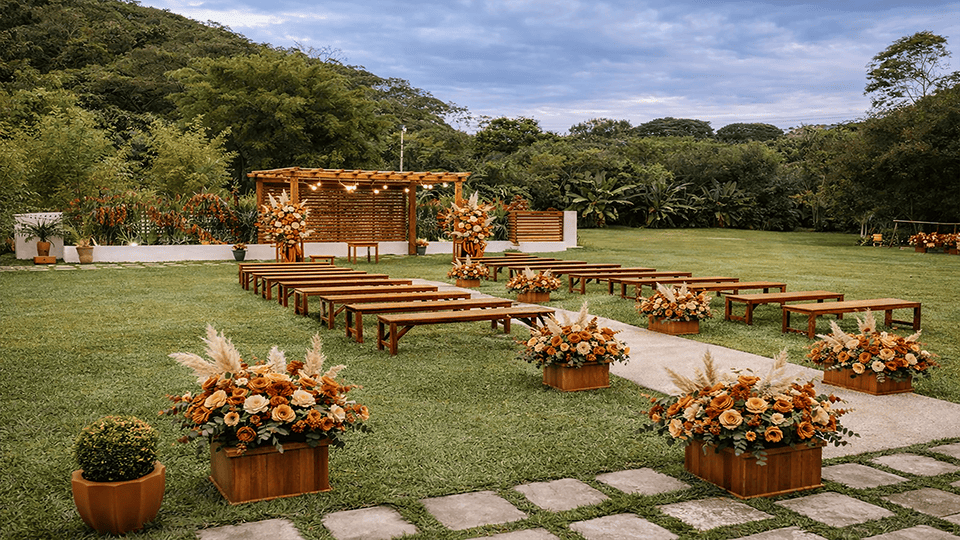
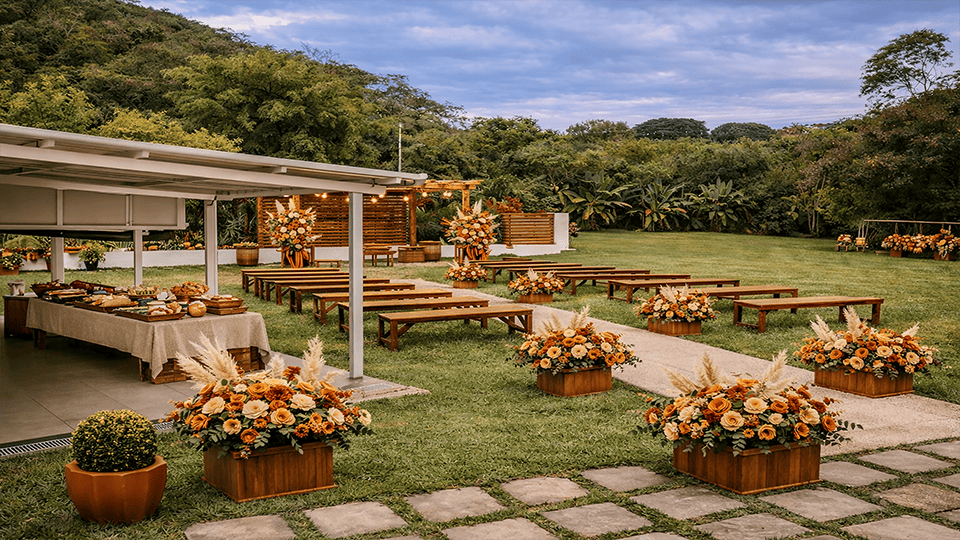
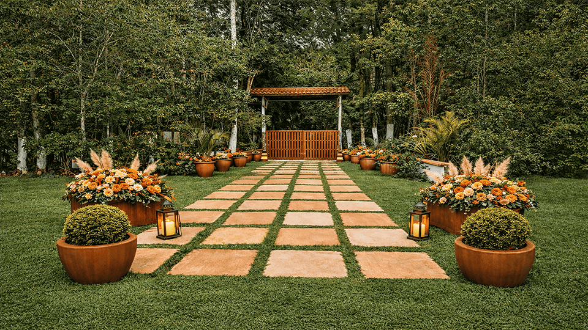
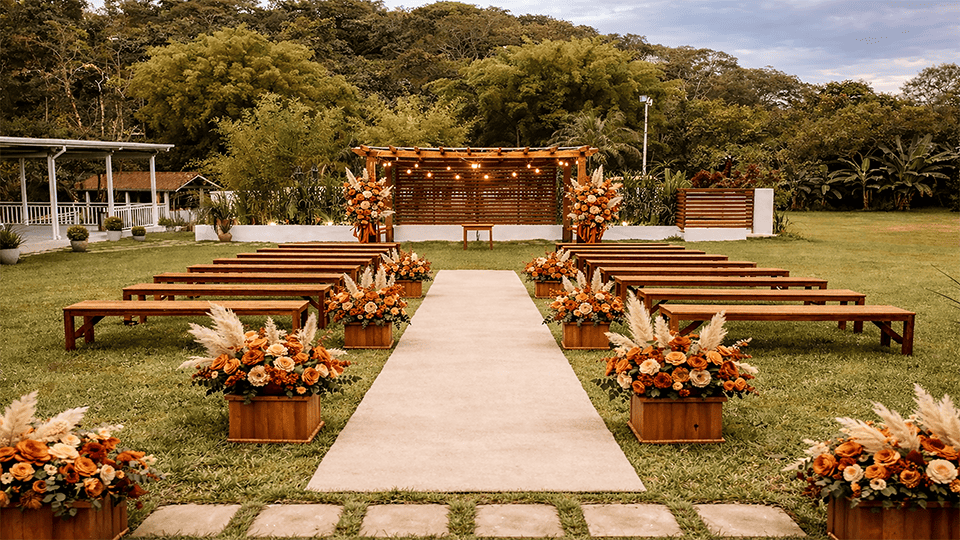

Para contribuir em dinheiro, entre em contato pelo whatsapp.
Clique aqui.Dúvidas / Perguntas frequentes:
posso levar um acompanhante ?
Não, entrarão somente os nomes que estiverem na lista.
Qual horário recomendável para estar no local ?
O ideial para chegada é às 14h.
A cerimônia e a festa são no mesmo local?
Sim. Será no mesmo local.
Haverá espaço ou estrutura para crianças?
Sim. Na chácara terá brinquedos e uma quadra para as crianças.
Até quando posso confirmar presença?
A data máxima para confirmação é até um mês antes.
Como chegar ao local?
Caso o GPS ou aplicativo informar outro local próximo mas diferente, coloque o endereço Estr. Maria Carmem Gualda Pellegrino, 8420.
Há estacionamento no local?
Não. Mas ao chegar no local você pode entrar em contato com a acessoria.
O local é fácil de acessar por aplicativo (Uber/99)?
Recomendamos chamar o aplicativo com pelo menos 15 a 20 minutos de antecedencia para chegar no local no horário indicado.
Endereço da chácara:Estrada Mun., 8488 - Jardim Alegria, Francisco Morato - SP, 07983-000.
Acesse aqui